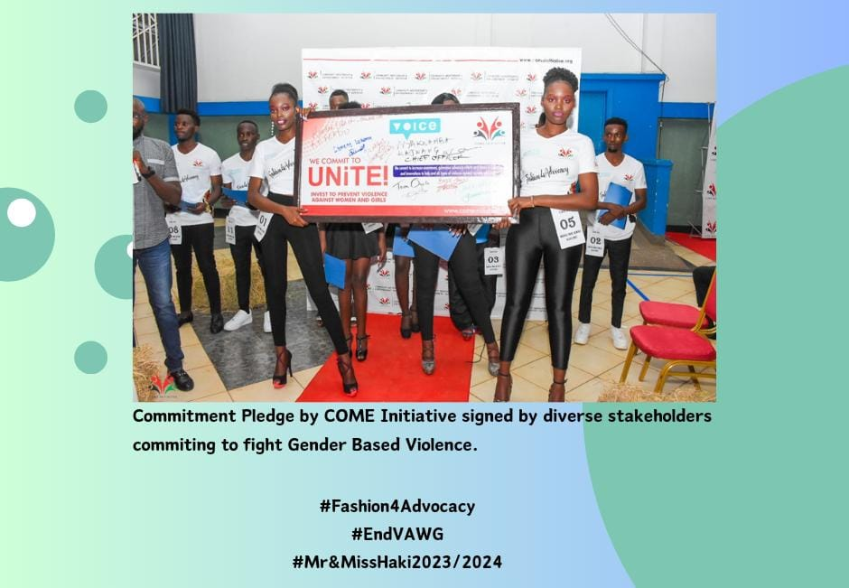
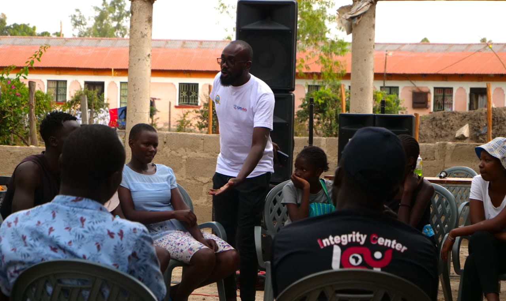
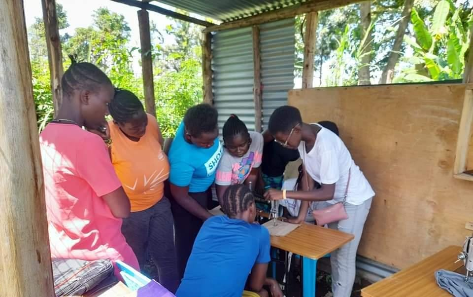

i am here? Chat with us
Click one of our representatives below

Vincent Boitone
Executive Director
I'm Online

Amplifying voices of Youth, Adolescent Girls and Young Women (AGYW) through sharing their experiences, stories and ideas on emerging issues for behavior change communication through Arts, Digital and social media (Vlogs E-Podcasts and E- Captions). The target beneficiaries are Youths and AGYW aged 15-35 years.

Provision of life skills-based, Reproductive and mental Health Education for both the Youth in and out of schools, Adolescent Girls and Young Women through creating safe spaces for increased access to information and open discussion on mental health, sexuality and gender issues among adolescent girls and boys, including PWD. The target beneficiaries are AGYW aged 15-25 years, and In & Out of school Youths aged 18-35 years.

Provide orrportunities for decent work that are productive and able to deliver fair income, security in work place (SDG8:Decent Work and Economic Growth) and social protection, better prospects for personal development and social integration for Youth and Young Women (SDG10:Reduced Inequalities. The target beneficiaries are AGYW aged 18-25 years, and Youths aged 18-35 years.